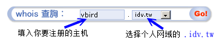
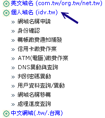
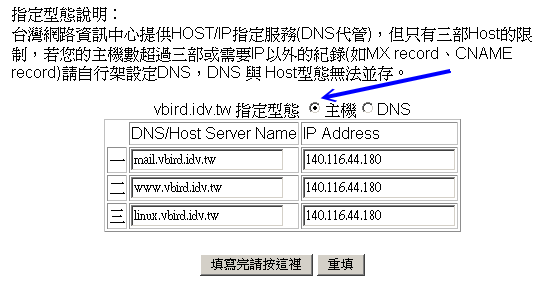
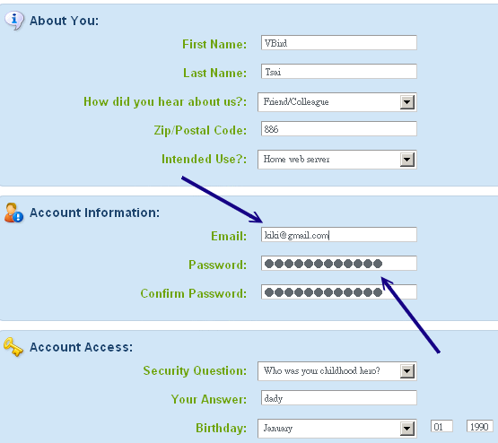
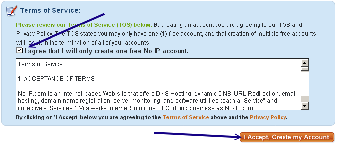
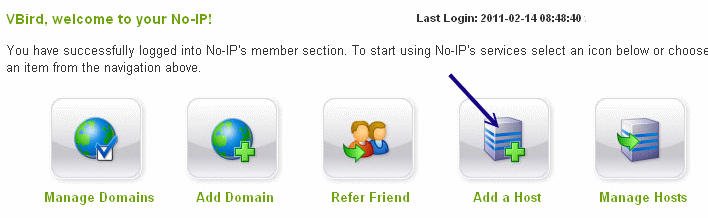
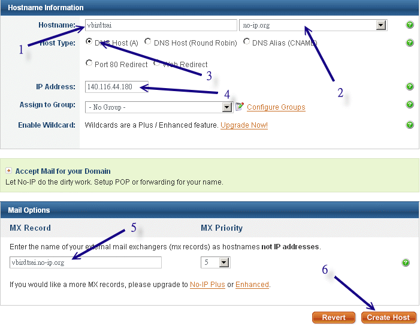
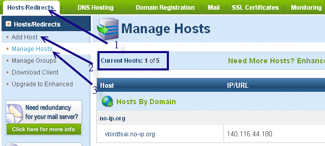

根据前面的说法，如果你只想要有合法的主机名的话，那么依据你的 IP 是否固定而有： (1)静态 DNS 主机名与
(2)动态 DNS 主机名两种注册方式。底下鸟哥列出自己有注册经验的网站提供大家参考：
- 静态 DNS 主机名注册：
静态 IP 对应主机名的注册网站实在太多了，底下是鸟哥有注册经验的网站：
- 动态 DNS 主机名注册：
至于免费的动态 DNS 系统主要就是这个 NO-IP 公司提供的网站啰！如下连结：
 10.2.1 静态 DNS 主机名注册：以
Hinet 为例
10.2.1 静态 DNS 主机名注册：以
Hinet 为例
静态 DNS 的申请方式其实都差不多，都是需要：
- 先查询所想要注册的网域是否存在；
- 进入 ISP 去申请注册你所想要的主机名；
- 缴费，并等待主机名被启用。
我们以台湾蛮常见的 Hinet 这个 ISP 提供的『个人网域： .idv.tw』注册方式来说明：
1. 登入主画面，并查询欲注册网域是否存在
先连结到底下的网页去：http://domain.hinet.net/
，并在 whois 的画面当中(右上角)选择你想要注册的主机名，按下『Go』开始搜寻。

图 10.2-1、利用 whois 查询欲注册网域是否存在
2. 逐步进行注册
如果确认你的主机名没有被注册掉，那么你就可以开始注册了！同样的在上面的网站连结当中，
选择『个人域名』就可以开始申请了！请由『域名申请』开始依序一步一步办理！这里不再说明了，反正都是中文，
看的懂得啦！ ^_^

图 10.2-2、个人网域逐步注册的流程示意图
3. 填写主机名对应的 IP
通常花个几天等待缴费完毕后，我们就可以开始进行登入与主机名的填写了！在图 10.2-2 的图示中按下『DNS 异动与查询』的项目，
并填入当初注册时的主机名与密码，然后就会出现如下的画面了：

图 10.2-3、主机名与 IP 对应的填写范例
特别的给他留意，因为我们没有要架设 DNS 主机，所以当然最上方要选择『主机』的项目，
然后你可以填入三部主机名喔！当然，这三部主机名可以通通指向同一个 IP ，也可以不同！
随你的便吶！需要注意到的是，你的主机名应该是『othername.yourhost.idv.tw』后面的
yourhost.idv.tw 是不变的，前面的 othername 则可以自由选取呢！例如鸟哥上面的设定，后面均是
vbird.idv.tw ，而前面的名称就可以让我自由选择啦！
4. 等待 DNS 启用
在上图 10.2-3 当中按下『填写完请按这里』后，就等着启用吧！不过设定成功到可以使用，其实需要一定的时间的。
以鸟哥为例，第一次申请之后，大约过了 20 小时该设定才正确的启动呢！请耐心等候啊！不要太着急啰！ ^_^
在台湾，各家的领域名注册流程都差不多，不过，金额是有点差异的，当然，服务也就有不同啊！鸟哥的
vbird.org 领域名则是在 http://www.godaddy.com 注册的喔！如果你不想要使用
.idv.tw 来注册的话，那么国外的 ISP 提供的 DNS 也可以考虑看看说！
10.2.2 动态 DNS 主机名注册：以
no-ip 为例
如果你跟鸟哥一样使用 ADSL 拨接的方式来上网，这表示你的 IP 应该是不固定的！果真如此的话，
那想要用这样的网络环境来架站就比较麻烦一点！因为上面利用 Hinet 注册的方式通常是给固定 IP 使用的，
你应该不会想要天天上去更新你的 IP 吧？此时这个 no-ip.com 所提供的免费动态 IP
对应主机名的服务就很重要啦！我们先来申请一个主机名来玩玩吧！ ^_^
1. 登入主网页，并且注册一个新账号
你必须要连上 http://www.no-ip.com 这个网站，
然后在出现的画面当中的右上角部分，选择『 Create Account 』那个项目。不过，如果你已经有 no-ip
网站的注册账号，那么直接跳到底下第四步骤去登入即可。
图 10.2-4、no-ip 网站的注册：新建账号点选
2. 开始填写识别数据
由于启动账号必须由 no-ip 提供一个注册启动的连结，因此你必须要填写正确的 email
来接受启动码。整个注册的讯息如下图所示：

图 10.2-5、no-ip 网站的注册：新账号建立所需填写数据
最重要的是，在该网页的最下方还有验证码以及你必须要勾选的『I agree that...』项目才行喔！
最后才点选『I Accept, Create my Account』项目噜。详细图示如下所示：

图 10.2-6、no-ip 网站的注册：新账号建立务必勾选项目
3. 启用账号
在你申请注册一个新账号后， no-ip 会发一封信给你，请自行参考信件内容，并点选正确的启动码连结，
那你的账号就能够启动，此时请回到图 10.2-4 去，针对你的 email(username)/密码(password)
填写妥当，就能够登入 NO IP 网站了。
4. 登入 no-ip 且设定主机名与 IP 的对应
透过图 10.2-4 的样子来登入后，你会看到有点像底下的图示，底下就准备来处理你主机名与 IP
的对应数据了：

图 10.2-7、登入 NO IP 网站后的示意图
上图的重点在于『Add a Host (新增一个主机名)』及『Manage Hosts (管理主机名)』两者，由于我们都还没有主机名的设定，
因此首先就使用 Add a Host 来新增一笔主机名吧！按下那个图示，之后就会出现底下的画面：

图 10.2-8、新增一个主机名与 IP 对应的方式
主要填写的内容为：
- 你想要的主机名；
- No IP 网站提供的领域名，与上个名称组合成完整的主机名；
- 选择单一主机的 IP 对应；
- 填写该主机名对应的正确 IP 为何 (后续可以透过程序直接修改，这里随便填也没关系)
- 只与 mail server 有关，所以写不写都无所谓，不过，建议填写自己的主机名即可
- 若上述数据都正确，按下 Create Host 即可建立成功。如果该主机名有被使用掉的话，屏幕会出现警告讯息，
此时请再选填另外的主机名吧！
如果一切都没有问题的话，应该就会出现如下所示的图示。未来如果你想要更新或者是删除或者是新增主机名的话，
就透过下图的示意流程来处理即可。且由下图你也可以知道， NO IP 有提供 5 个免费的主机名给你使用喔！真是太棒了！
如果你想要维护相关数据，就使用『 Manage Hosts 』按钮即可处理了。

图 10.2-9、主机名处理完毕与维护的示意画面
5. 设定自动更新主机名与 IP 的对应
如果系统重新启动，或者是重新拨接取得一个新的 IP 后，我们都要登入 no-ip 网站来修改的话，
那就太没有效率了！所以 no-ip 提供一个好用的客户端程序给系统管理员使用，你可以在 no-ip 官网右上方的『Download』
处选择相关的档案。该网站目前提供给 Linux, Windows 与 MAC 等系统使用的程序，非常方便。
我们当然是选择 Linux 那个项目啊！请自行下载并且将该程序移动到 Linux 系统上吧！
整个安装与启用的流程式这样的：
# 1. 编译与安装：
[root@www ~]# wget \
> http://www.no-ip.com/client/linux/noip-duc-linux.tar.gz
[root@www ~]# cd /usr/local/src
[root@www src]# tar -zxvf /root/noip-duc-linux.tar.gz
[root@www src]# cd noip-*
# 注意一下，这个目录里面有个文件名为 README.FIRST 的档案，务必察看一下内容！
[root@www noip]# make
[root@www noip]# make install
# 这样会将主程序安装在 /usr/local/bin/noip2 而主参数档放在
# /usr/local/etc/no-ip2.conf 当中！然后你必须要开始回答一些问题：
Please select the Internet interface from this list.
By typing the number associated with it.
0 eth0
1 eth1
0 <==因为鸟哥的主机对外使用 eth0 接口
Please enter the login/email string for no-ip.com kiki@gmail.com
Please enter the password for user 'kiki@gmail.com' ***
# 上面这两个是你刚刚注册时所填写的 email 与密码喔！
Only one host [vbirdtsai.no-ip.org] is registered to this account.
It will be used.
Please enter an update interval:[30]
Do you wish to run something at successful update?[N] (y/N) n
mv /tmp/no-ip2.conf /usr/local/etc/no-ip2.conf
# 重点在此！刚刚你做的配置文件被放到上面这个档案中了！
|
这样就将你的 no-ip 制作完毕，而且也可以开始来执行啰！执行的方法也是很简单啦！
# 2. noip2 的程序使用：
[root@www ~]# /usr/local/bin/noip2
# 不要怀疑！这样输入后，你在 no-ip 上面注册的主机名，
# 就开始可以自动的产生对应了！就这么简单！
[root@www ~]# noip2 [-CS]
选项与参数：
-C ：重新设定参数，亦即设定刚刚我们上面输入粗体字的咚咚！
如果你有两个以上的 no-ip 主机名时，就一定需要使用 noip2 -C
来重新设定参数档案！
-S ：将目前的 noip2 的状况显示出来！
[root@www ~]# noip2 -S
1 noip2 process active.
Process 2496, started as /usr/local/src/noip-2.1.9-1/noip2, (version 2.1.9)
Using configuration from /usr/local/etc/no-ip2.conf
Last IP Address set 140.116.44.180
Account kiki@gmail.com
configured for:
host vbirdtsai.no-ip.org
Updating every 30 minutes via /dev/eth0 with NAT enabled.
|
嘿嘿！这样就成功了！而且每 30 分钟 noip2 可以自动的去主网站上面进行更新呢！真是很不错！那如果想要一开机就启动
noip2 呢？这样做即可：
# 3. 设定开机启动：
[root@www ~]# vim /etc/rc.d/rc.local
# 加入底下这一行：
/usr/local/bin/noip2
|